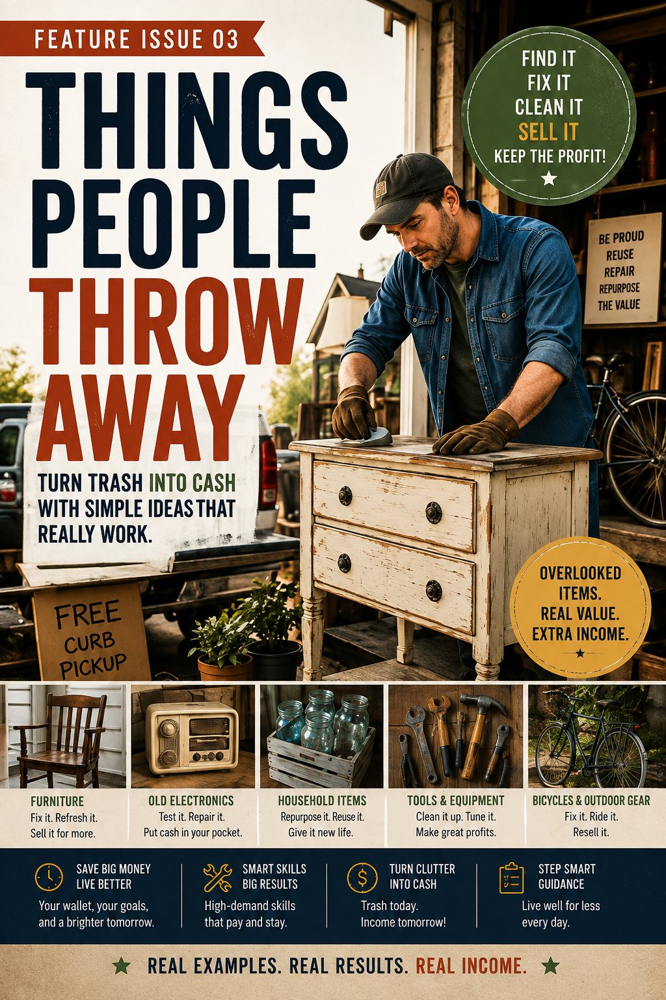
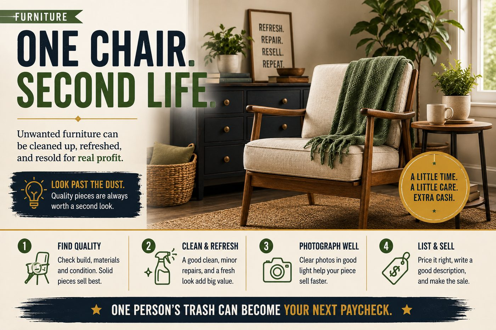
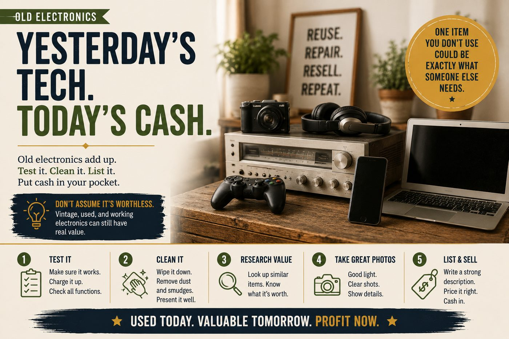
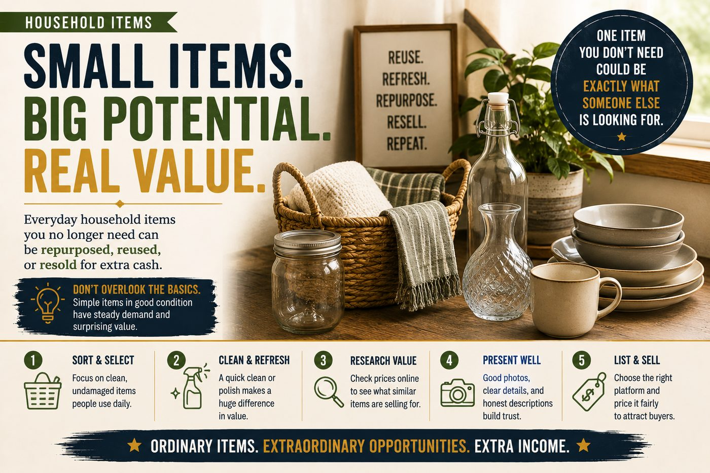
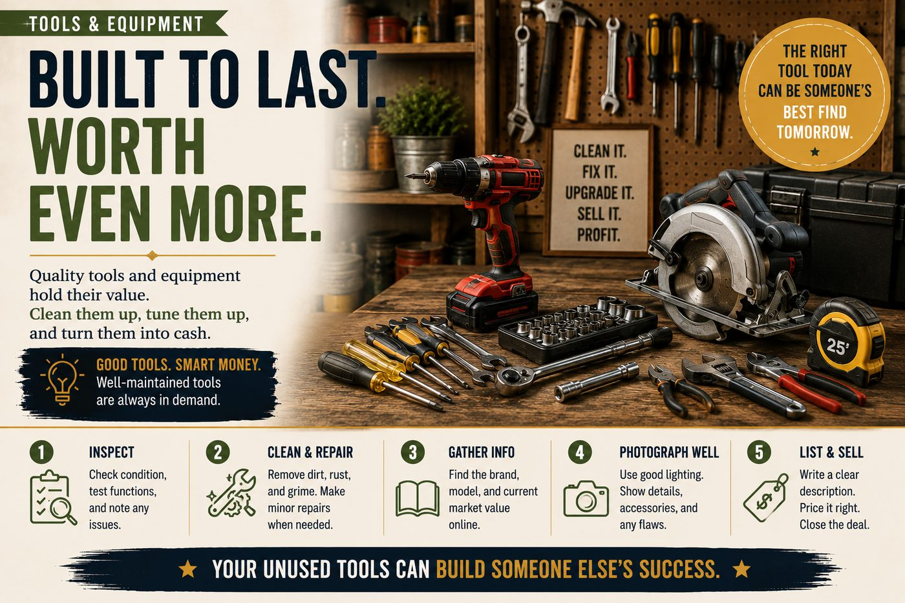
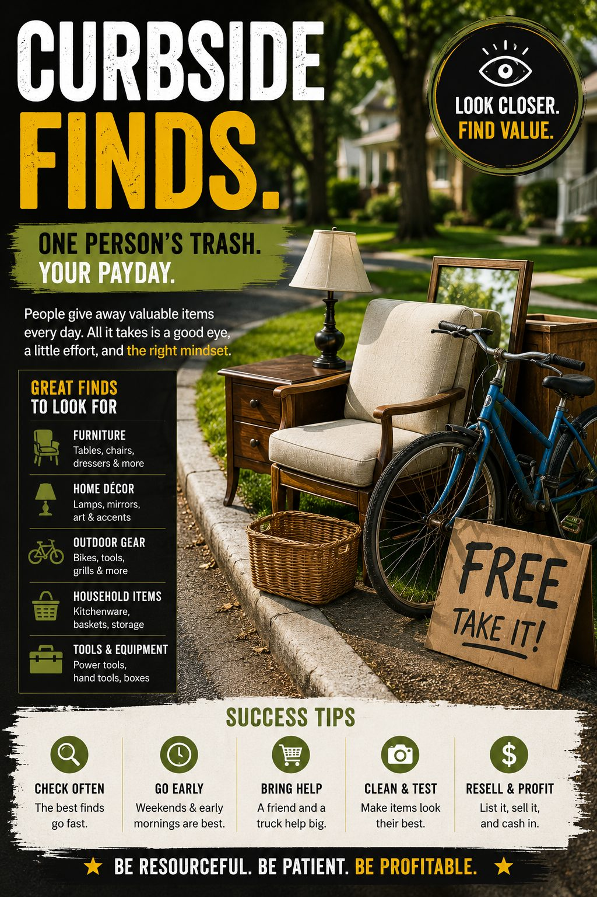
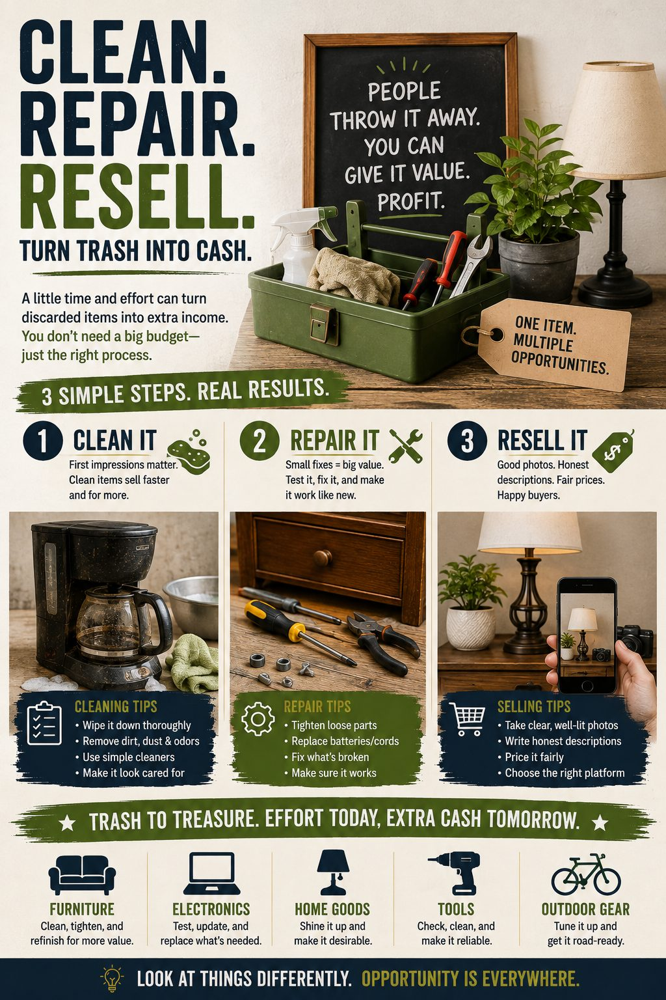
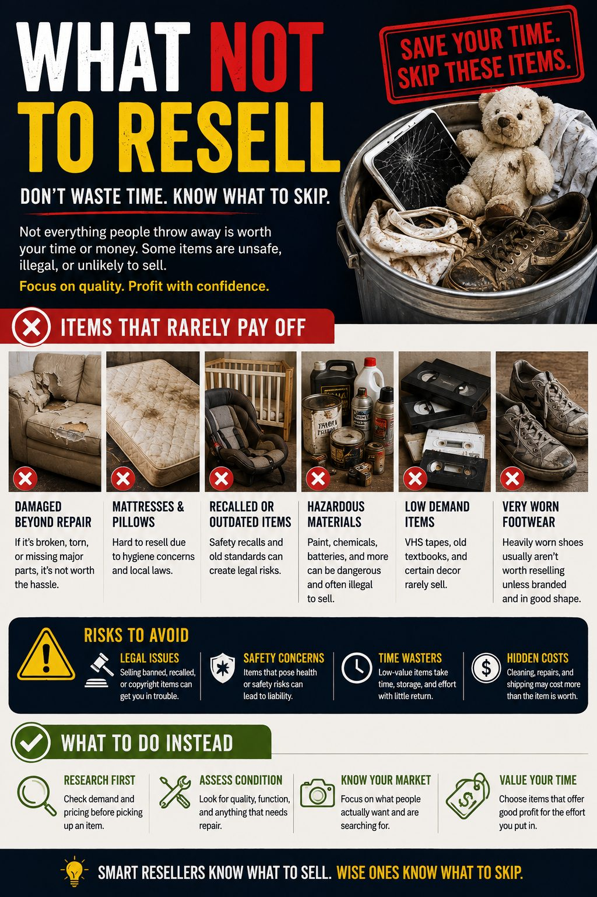
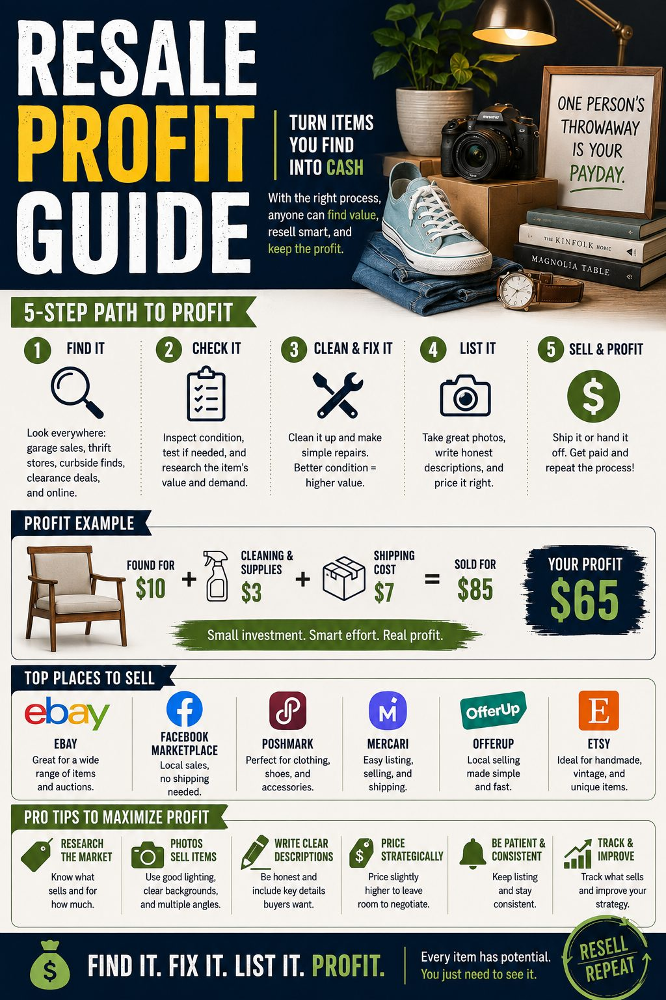

Affiliate Disclosure: This issue contains affiliate links. If you make a purchase through one of these links, I may earn a commission at no additional cost to you. As an Amazon Associate I earn from qualifying purchases.
Wealth Code Magazine · Issue 03
Things People Throw Away
How unwanted furniture, electronics, tools, bicycles, books and household items can sometimes be cleaned, repaired, repurposed and resold.
Every week, useful things disappear into dumpsters, donation bins and curbside piles. Some deserve to be there. Others have simply become inconvenient to the person who owns them.
That difference creates opportunity.
A scratched table may need an hour of attention. An old bicycle may need a tune-up. A forgotten tool may only need cleaning. A box of books may contain titles someone else has been searching for.
The opportunity isn’t in collecting everything people discard. It’s in learning to recognize the small percentage worth a second look.
1. Furniture: Look Past the Finish

Furniture is one of the easiest places to understand the difference between appearance and underlying value.
Solid construction can survive scratches, faded finishes, outdated hardware and years of ordinary use. Those cosmetic problems may discourage the current owner while presenting an opportunity to someone willing to clean, repair and photograph the piece properly.
What deserves a closer look?
- Solid wood tables, desks, dressers and nightstands
- Quality chairs with sturdy frames
- Small pieces that are easy to transport
- Recognizable vintage or unusual designs
- Furniture needing cosmetic rather than structural repair
Avoid assuming that old automatically means valuable. Check construction, condition, local demand and comparable listings before investing money or several hours of work.
Small scratches and worn areas don’t always require refinishing an entire piece. A furniture touch-up or repair kit can help with minor cosmetic work.
View Furniture Repair Kit on Amazon →2. Old Electronics: Test Before You Toss

Technology becomes obsolete quickly, but obsolete and worthless aren’t always the same thing.
Older audio equipment, cameras, game systems, keyboards, calculators, components and discontinued electronics can have buyers. Some people want working equipment. Others need replacement parts. Collectors may want devices precisely because they are no longer made.
The rule here is simple: identify first, clean second, test carefully, then research.
Dust, fingerprints and grime can make functioning electronics look far worse than they are. Use products intended for electronics and follow the manufacturer’s directions.
View Electronics Cleaning Kit on Amazon →3. Ordinary Household Items Can Surprise You

The profitable object isn’t always glamorous.
Cookware, lamps, baskets, frames, mirrors, storage pieces, small appliances, decorative objects and other household goods can all have secondary-market demand when condition and price make sense.
This is where selectivity matters. A five-dollar sale that requires an hour of cleaning, twenty messages and a thirty-minute drive isn’t necessarily a five-dollar profit.
Think in terms of return on effort.
Ask what the item is likely to sell for, what it will cost to prepare, how difficult it will be to store or ship, and how much of your time the transaction may consume.
4. Tools & Equipment: Ugly Can Still Work

Tools are particularly interesting because buyers often care more about function than fashion.
Hand tools, workshop equipment and useful household tools may remain serviceable for decades. Dirt, surface rust or an unfashionable appearance doesn’t necessarily eliminate utility.
Check for missing pieces, damaged electrical components, cracked housings and other safety problems. Never disguise defects simply to make a sale. Describe condition accurately.
If you’re regularly cleaning and repairing resale finds, a compact basic tool kit can eliminate repeated trips looking for the right screwdriver, socket or bit.
View Basic Tool Kit on Amazon →5. Bicycles & Outdoor Gear: A Second Life on Two Wheels
An unused bicycle can sit in a garage for years because its owner sees flat tires, worn grips and an afternoon of work.
Someone else may see transportation.
A sound frame and serviceable components can make an older bicycle worth repairing. Depending on the bicycle, there may even be another possibility: modern electric-bike technology.
OLD BIKE. NEW PURPOSE.
Some conventional bicycles can potentially be retrofitted with electric components. That doesn’t mean every old bicycle should be converted. Frame condition, brakes, wheel size, component compatibility, battery placement and applicable laws all matter.
Sometimes the smartest decision is restoration. Sometimes it’s conversion. Sometimes it’s simply selling the bicycle to someone who wants it as-is.
A dedicated bicycle tool kit can make common adjustments and repairs easier.
View Bike Repair Kit on Amazon →Electric conversion systems vary widely. This motor is an example of the technology now available—not a universal recommendation for every bicycle. Always confirm compatibility and installation requirements before purchasing.
View E-Bike Conversion Motor on Amazon →6. The Curb Isn’t a Store

Curbside finds can be tempting because the acquisition cost is zero. That does not make the item free.
Your time has value. Transportation has a cost. Cleaning supplies cost money. Storage takes space. Repairs can turn a promising find into an expensive project.
There are also items you simply shouldn’t bring home because of sanitation, pest, safety or legal concerns. Local rules concerning curbside collection and discarded property vary, so know the rules where you live.
The discipline isn’t learning to pick up more. It’s learning to walk away more often.
7. Clean. Repair. Resell.

Once you’ve found something promising, resist the temptation to list it immediately.
Clean it properly. Make sensible repairs. Identify it accurately. Research comparable items. Then photograph what you’re actually selling.
You don’t need to make an old object look new. You need to make its condition easy for a buyer to understand.
Good listings reduce uncertainty.
Use clear photographs, honest descriptions, measurements where appropriate, and disclose flaws. If an item has a scratch, show it. If a component is missing, say so. Trust is worth more than squeezing a few extra dollars from one transaction.
8. Your Photograph Is Part of the Product
Online buyers cannot pick up an item, inspect the back or test the controls. Your photographs have to do part of that work for them.
Natural window light and a clean background are often enough. For smaller objects, consistent lighting can make listings look considerably more professional without turning your home into a photography studio.
A small product photography light box can provide a simple background and consistent illumination for books, electronics, collectibles and other small items.
View Photography Light Box on Amazon →9. Put the Item Where the Buyers Are
Finding value is only half the process. The next question is where that value can actually find a buyer.
Different marketplaces suit different products. Large furniture and bulky equipment may make more sense on local marketplaces where buyers can arrange pickup. Smaller, collectible or easily shipped goods may reach a much larger audience through national or international platforms.
Common places to investigate include:
- eBay for many shippable, collectible and specialty items
- Facebook Marketplace for local furniture, bicycles, tools and household goods
- Kijiji for local classified sales, particularly in Canada
- Amazon where an item and seller account qualify for the appropriate selling program
- Specialist marketplaces for categories such as clothing, vintage goods, collectibles or books
- Local consignment stores, used-book stores, flea markets and community sales
Always check the marketplace’s current seller rules before listing. Restricted products, prohibited goods, fees, shipping standards and condition requirements vary by platform and can change.
And never assume the biggest marketplace is automatically the best one. A dresser doesn’t need a global audience if someone five kilometres away will pick it up tonight.
10. Don’t Overlook the Bookshelf
Used books deserve their own inspection before they’re donated or discarded. Most ordinary books aren’t rare treasures, but subject matter, edition, condition, scarcity and current demand can change the equation.
Some books may be worth listing individually. Others may make more sense as related bundles—for example, several books by one author or a group on the same subject. Depending on the book and your location, specialist buyback services, local booksellers or online marketplaces may also be options.
Check the exact ISBN and edition when possible. A valuable edition and a nearly identical low-value edition can sit beside each other on the same shelf.
11. Profit Can Disappear in the Shipping Box
A sale price isn’t profit.
Before listing something for shipment, estimate marketplace fees, packaging, postage, cleaning or repair expenses, and what you originally paid for the item.
A heavy object sold cheaply can become a lesson in shipping economics. Know the approximate packed weight before setting your price.
A digital shipping scale makes it easier to estimate postage before listing an item rather than discovering the cost after it sells.
View Digital Shipping Scale on Amazon →If reselling becomes regular rather than occasional, printing shipping labels at home can simplify fulfillment.
View Thermal Label Printer on Amazon →12. The Most Profitable Find May Be the One You Leave Behind

Not everything deserves a second life through resale.
Severely damaged goods, unsanitary items, recalled products, hazardous materials, unsafe equipment and goods prohibited by a marketplace can create far more risk than opportunity.
Certain categories also carry special legal or safety obligations. Research before you acquire, repair or list something unfamiliar.
A reseller’s advantage isn’t the ability to see value everywhere. It’s the ability to distinguish potential value from potential trouble.
13. The Resale Profit Test

Before bringing something home, run a quick mental calculation:
- What can it realistically sell for?
- How much will cleaning or repair cost?
- How long will the work take?
- Can I store it until it sells?
- Can it be shipped economically?
- Where are the likely buyers?
- What are the marketplace fees?
- What happens if it doesn’t sell?
The Bigger Wealth Lesson
This issue isn’t really about garbage.
It’s about learning to see value differently.
People frequently make economic decisions because something is inconvenient, unfashionable, dirty, unfamiliar or no longer useful to them. The next person evaluates the same object under different circumstances.
That gap exists everywhere in business.
The habit worth developing isn’t scavenging. It’s observation. Learn what people value. Learn what problems you can solve. Learn what improvement is worth making—and which opportunities deserve to be ignored.
Sometimes wealth begins with acquiring something new.
Sometimes it begins with seeing what everyone else overlooked.
Wealth Code Magazine · Issue 03
Things People Throw Away
Real examples. Real possibilities. A different way to think about value.
Continue Your Wealth Journey
Explore More from Rich Abbott
Wealth is about more than finding opportunities. It is also shaped by how you think, the decisions you make, and your willingness to recognize value others overlook. If you’d like to go deeper, these resources explore the psychology and purpose behind building wealth.
Take the Wealth Mindset Assessment
Discover how your current beliefs about abundance, worthiness, capability, action and money may be influencing your financial decisions.
Take the Free Assessment →
The Millionaire Mindset
Explore the wealth psychology behind financial behavior and learn how beliefs, decisions and consistent action can influence the wealth you build.
Explore The Millionaire Mindset →
The Abundance Algorithm
Go deeper into abundance thinking and the mental patterns that influence how you recognize possibilities, respond to opportunity and make financial decisions.
Explore The Abundance Algorithm →
Keep Reading Wealth Code Magazine
Explore more issues covering wealth psychology, financial independence, opportunity, entrepreneurship and unconventional ways of thinking about money.
Visit Wealth Code Magazine →

Coming in Feature Issue 04
Weekend Handyman
Not every income opportunity requires a new career, expensive equipment or a complicated business plan. Sometimes the opportunity is a small job someone nearby simply does not have the time, tools or confidence to do.
Feature Issue 04 explores practical weekend handyman opportunities — from furniture assembly and simple home maintenance to outdoor projects, seasonal jobs and other useful services people are willing to pay for.
Return to the MagazineEditorial, Safety and Affiliate Disclosure
This feature is provided for general educational and informational purposes. It does not provide legal, tax, financial, licensing, insurance, electrical, mechanical, construction, medical or other professional advice.
Requirements vary by location, marketplace and type of activity. Readers should verify applicable laws, local regulations, platform rules, product recalls, safety procedures, insurance requirements and professional requirements before repairing, modifying, collecting, selling or shipping an item.
Examples involving resale prices, costs or potential profit are illustrative only and are not earnings promises. Actual demand, selling prices, fees, taxes, shipping costs, repair expenses, time requirements and profit will vary.
Some links in this issue are affiliate links. RichAbbott.com may earn a commission from qualifying purchases at no additional cost to the buyer. Product recommendations are included because they relate to the subject being discussed. Some featured books and resources are written or published by Rich Abbott.
Practical opportunities, useful skills and grounded financial thinking.